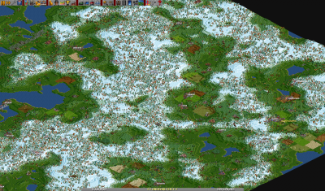
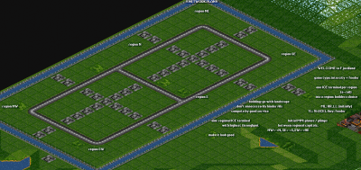
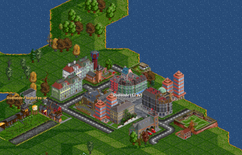
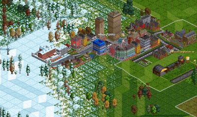
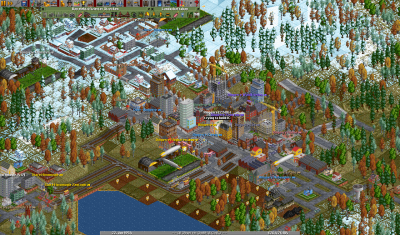

#openttdcoop vs AIs: now on ProZone!
With the newly started ProZone game we try something new, making use of a number of recently added features to OpenTTD: we make it a coopetition game of us players vs. 14 other AI companies. In order to not completely fall into chaos I prepared a map which is basically ready to play for many people where we don’t need to care too much about money and many people can start building right away.   
look on part of the map
Starting in January 1930, the map is 1024 x 512 tiles with alpine climate and a few patches of water. The edges are all the newly introduced freeform edges – giving us more room to build 🙂 Trains are provided by the 2cc train set, road vehicles may be chosen from egrvts, German road vehicles and Heavy Equipment set, all in their newest version as found in BaNaNaS.
The plan for the map is to have a passenger and mail intercity service between six regions which are basically managed more or less independently with their own s-bahn.
sketch of the plan of the map
Besides building a good intercity service, it shall be a shallange to build the best regional passenger service in order to bring most passengers to your intercity terminal. Sign in to one of the six possible regions:
Northern province’s possible capital with airport (as our moneymaker)



South Eastern capital with airport

But unlike previous games with a similar setup of regions you’re not alone this time: you have to deal with 14(!) competitors which will try to make a profit in your provinces as well. Each AI will get a chance to show off and give an impression of its building style. In a short test game of a similar scenario the map quite quickly featured zillions of road vehicle lines and many airports with an occasional rail line inaugurated by the competitors: 
Scene from playing with 14 AI competitors

So have a look at let’s see how we can get things going in the the regions! Sufficient space is available and we surely also have sufficient number of free client slots in order to accomodate all eligible players at once 🙂 Let’s show them AIs that there’s nothing which beats a human brain! 🙂
Categories: Community News
thor82 February 7, 2009 09:12
how do i join?